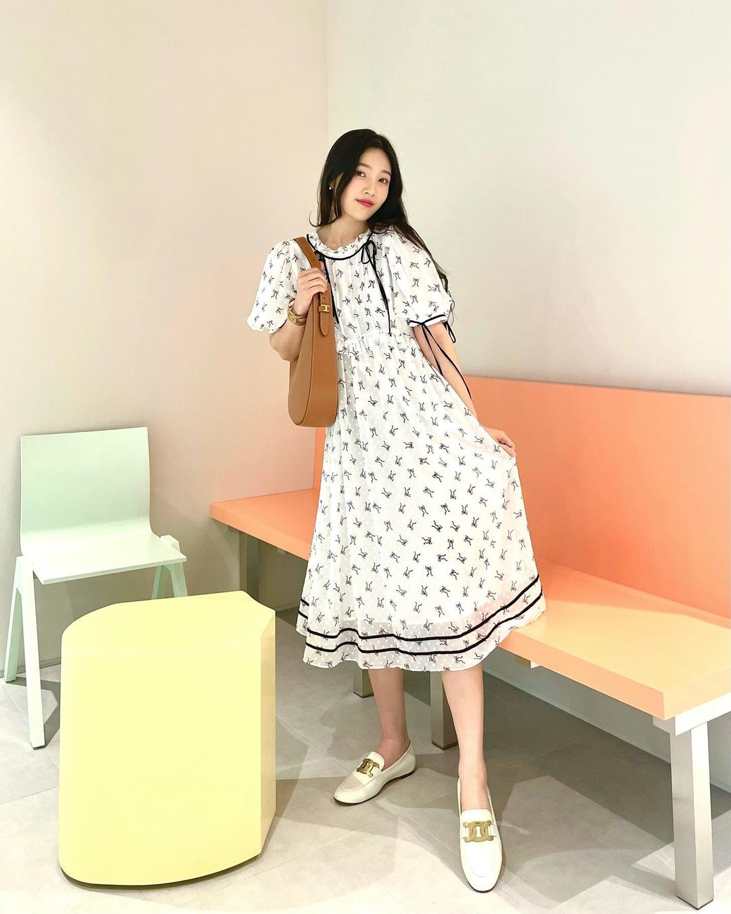

'크러쉬♥' 조이, 연애하더니 더 예뻐진 미모 [인스타]
 지난 31일 조이는 개인 인스타그램을 통해 별다른 코멘트 없이 관련 해시태그와 하트 모양의 이모티콘을 덧붙인 여러 장의 사진을 게재했다.공개된 사진 속 조이는 흰색 원피스를 입고 사진을 찍은 모습이다. 특히 그의 아름다운 비주얼과 슬림한 몸매가 조화를 이뤄 보는 이들의 감탄을 자아냈다.
이를 본 네티즌들은 "너무 예뻐요", "역시 예뻐", "귀엽다" 등 조이의 비주얼을 칭찬하는 반응이 가득했다.
한편 조이가 속한 레드벨벳(아이린, 슬기, 조이, 웬디, 예리)은 지난 16일 새 미니앨범 'Queendom(퀸덤)'으로 컴백했으며 최근 가수 크러쉬와 열애를 인정해 화제를 모았다.
iMBC 박노준 | 사진출처 조이 인스타그램